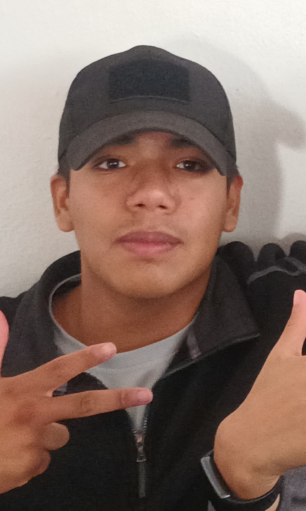

CURRICULUM VITAE
|

|
Mi nombre es Odín Naim Hernández Rangel
Fecha de nacimiento 07/07/2007
Direccion: Instalacion 00, Andromeda
Telefono: 800 300 3435
Mi correo es: angel_munoz-22322060160032@cetis16qro.edu.mx
|
Estudios:
Primaria - Erik Erikson
Secundaria - General número dos Mariano Escobedo, Certificado
Preparatoria - CETis 16, Certificado
Profecional - Universidad del CMMP, Certificado
|
Conocimientos:
guerrilla y contra guerrilla
Conocimiento en intervención para rescate de reenes y protección de VIPS
Perteneciente a la brigada de fusileros paracaidistas
idiomas: Na'vi 100%, Ensamblador 100%
Arme y desarme de explosivos
Conocimiento en medicina táctica, campeón nacional de básquet y armwestling
|
Enfoque Personal y Datos de Interes:
Conocimiento en agronomía y en la utilización de herramienta agricola
Maisto albañil, electricista,plomero,soldador, mecánico
Me gustaria proporcionarles mas detalles sobre mi
Curriculum durante una entrevista con usted.
Atte. Odín
|